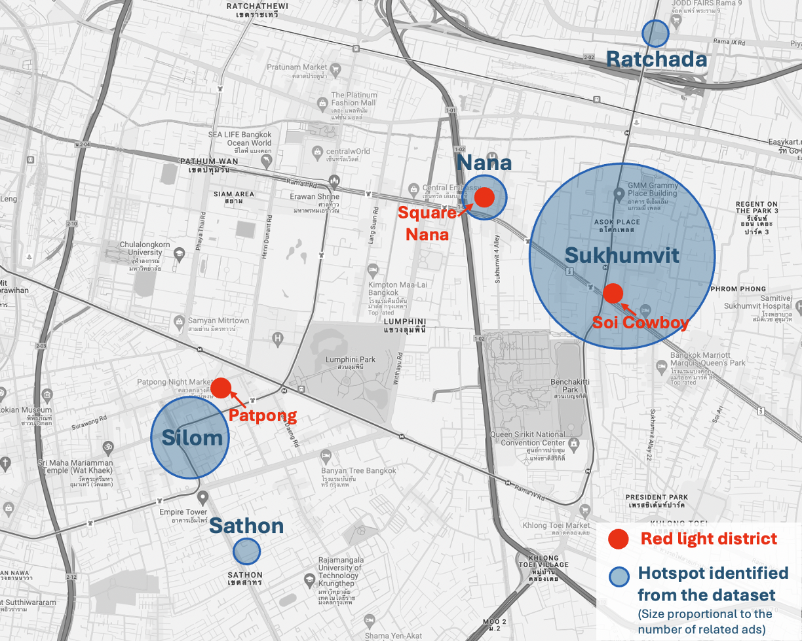
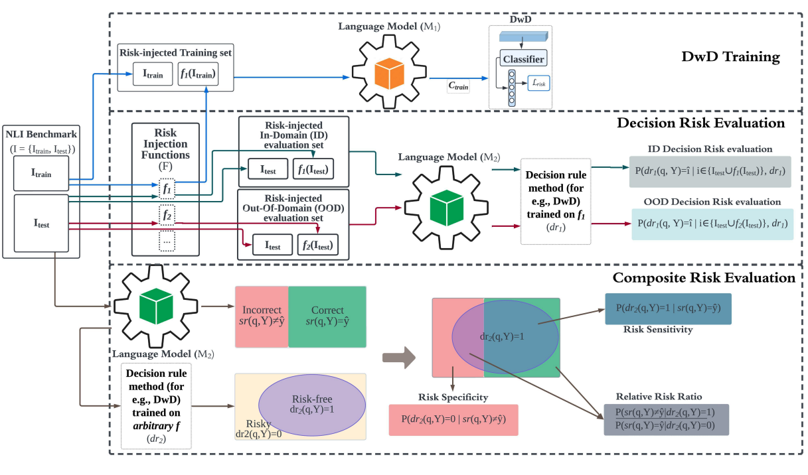
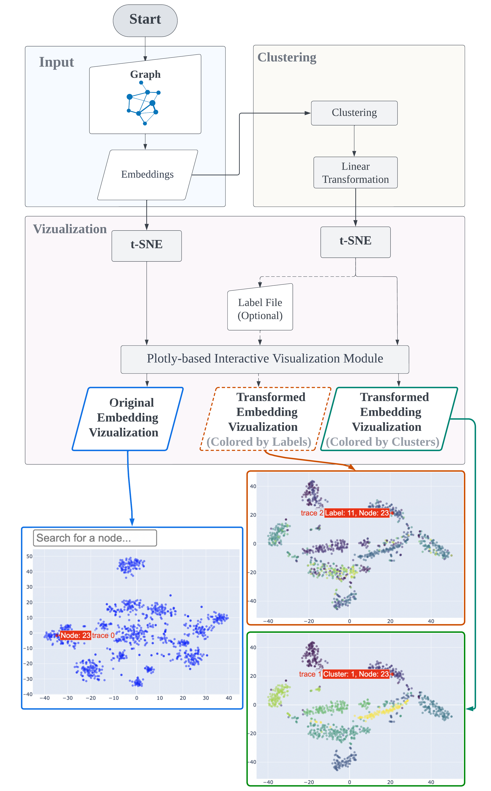
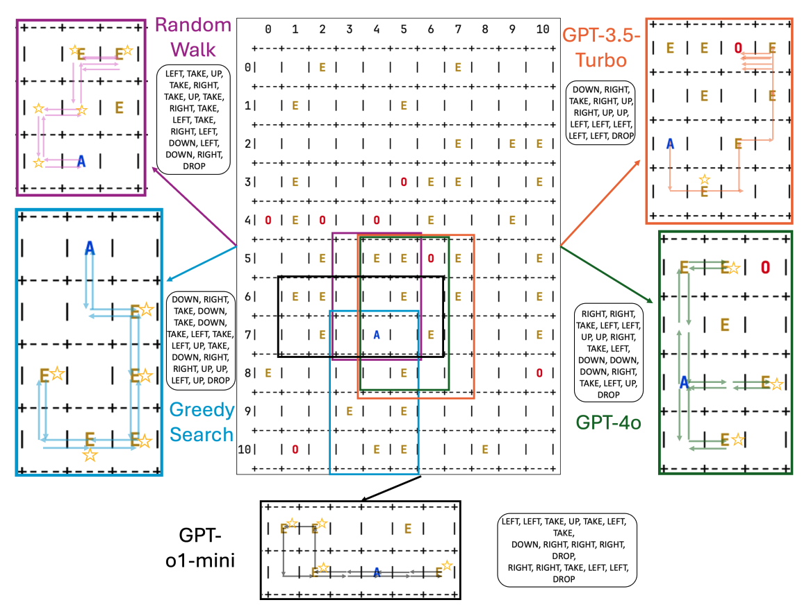
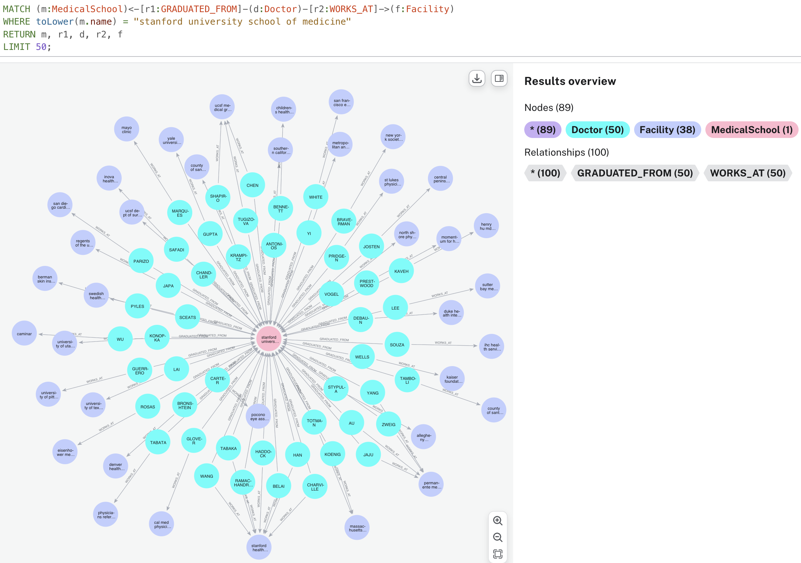

Active Projects

Studies in Global Human Trafficking
This nine-year project focuses on mapping and understanding human trafficking networks worldwide. We develop AI-driven tools to extract entities, relationships, and locations from noisy web data, building interpretable, entity-centric knowledge graphs. Using methods from network science, natural language processing, and computational social science, we examine how trafficking organizations form ties, coordinate activities, and adapt across geographic regions and online platforms. Grounded in theories of social structure and illicit coordination, our work aims to advance global understanding of how trafficking networks operate across different parts of the world.

Neurosymbolic Systems for Real-World Domains
Bridging large language models with knowledge-based systems for flexible, reliable analytics in complex domains like healthcare, public policy, and e-commerce.
We explore how large language models can be combined with structured knowledge graphs in a neurosymbolic framework, with the larger goal of building domain-specific systems that users can query directly in natural language—no coding or formal logic required. Unlike legacy expert systems, which were overly rigid, our approach achieves a balance between flexibility, answerability, and generality. Importantly, these neurosymbolic systems are designed with 'common sense' in mind, meaning that users can dialogue with them in the same way they would interact with real human beings.

Network Modeling of Complex Phenomena
The broad availability of datasets in complex domains like social media, corporate filings and transportation has led to exciting advances in, and convergence of, research areas like network theory and computational social science. In this portfolio of projects, we use data and computational methods to study such complex systems. These projects range from developing a better understanding of policy impacts during COVID-19 to quantifying gender bias in literature. Our most recent project aims to study the structure of political campaign finance in the US House of Representatives.

Large Language Models and Cognitively Inspired Problem-Solving
We develop cognitively inspired benchmarks and methodologies to evaluate large language models on tasks involving decision-making, spatial navigation, estimative uncertainty, and commonsense behavior. Drawing from psychology and behavioral science, our approach focuses on whether models exhibit human-like patterns of behavior in complex, real-world scenarios. We target phenomena like bias, uncertainty calibration, and planning under constraints, aiming to move beyond accuracy metrics to assess how models act—not just what they predict.

Common Sense and Deep Cognition in Advanced AI
Toward reliable, knowledge-grounded reasoning in both large language models and agent-based systems.
This project explores how advanced AI systems—including large language models, reinforcement learning agents, and hybrid neurosymbolic architectures—can be endowed with common sense and deep cognitive capabilities to reason effectively in open-ended, real-world environments. While recent progress in generative models has been striking, many AI systems still struggle with reasoning and contextual understanding, and the ability to generalize in complex domains such as medicine, law, and finance.

Knowledge Graphs in Public Health and Medicine
Rising health disparities is a challenging social issue of our times, even in advanced countries like the United States. In this project, we are aiming to build and apply knowledge graphs (KGs) to provide insights on deep questions related to health. We also use KGs to build powerful search systems, such as Kaiser Permanente’s Finding Doctors and Locations (FDL) engine. In current research, we are also developing LLM-based chatbots to query the KG more naturally. As part of this effort, we have also conducted research on network visualization.